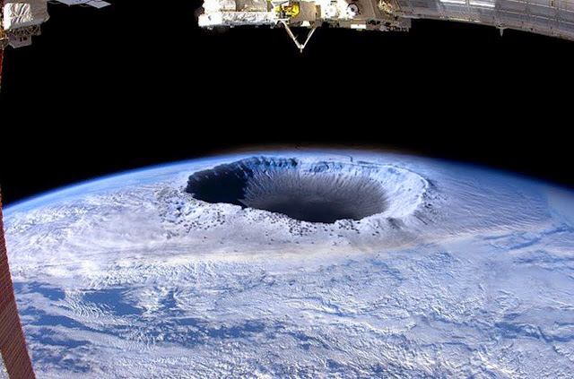

La ciencia ha logrado demostrar que la tierra gira alrededor del sol y que dura 365 días en darle una vuelta completa, que tiene planetas vecinos como marte, venus y un satélite natural (Luna). Pero hay una polémica acerca de la tierra por su estado físico, científicos nos han hecho creer que la tierra está formada por capas y un núcleo sólido, pero qué pensarían si les comentará que hay científicos que tiene una teoría totalmente diferente donde ellos aseguran que la tierra es hueca y además existe vida dentro de ella.
A continuación hablaremos de una de las teorías más sorprendentes que ha puesto a pensar a muchas personas y cómo no ponernos a pensar si la argumentación de esta teoría es impactante y muy curiosa. Científicos entran en debate con aquellos que aseguran que la tierra es totalmente sólida y abren una cantidad de preguntas que ponen en duda la teoría tradicional que todos conocemos.

Los científicos que defienden esta teoría aseguran que hay dos entradas al interior de la tierra que están situadas en los polos sur y norte. El vicealmirante Richard E. Byrd fue un distinguido aviador y explorador polar que sobrevoló el polo Norte en 1926 y dirigió varias expediciones a la Antártida y en uno de sus diarios aseguraba que no estaba sobrevolando el polo sino dentro de él y por radio hace un comunicado donde decía que no miraba nieve sino montañas, vegetación, lagos y ríos. Justo antes de su muerte el vicealmirante había dicho estas palabras, "La tierra más allá del polo es un continente encantado en el cielo, tierra de misterios permanente".
Aquellas personas que defiende esta teoría de la tierra hueca afirman que existe un sol interno cubierto por el manto terrestre y en la capa interior se dan las condiciones para que exista vida y de igual manera existen dos puertas donde se puede entrar y salir de este mundo las cuales están situadas en los dos polos y custodiadas por ciertos gobiernos que ocultan la información.
Julio Verne en su novela Viaje al Centro de la Tierra cuenta como unos aventureros se internan en rutas intraterrestres atravesando desde Islandia hasta Sicilia y encontrado océanos subterráneos y seres prehistóricos. Como ven se encuentran muchas teorías de la tierra hueca pero en sí todas hablan de lo mismo, de dos entradas polares, seres más desarrollados que nosotros, animales prehistóricos, océanos y sin fin de elementos que componen un mundo acto para la vida pero la gran pregunta es si esto realmente existe y además de eso preguntarnos también porque nos ocultan información de sucesos que no hacen parte del hombre sino de seres diferentes.